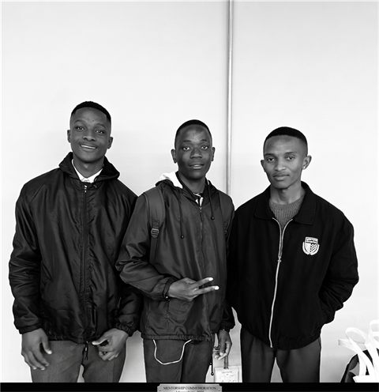
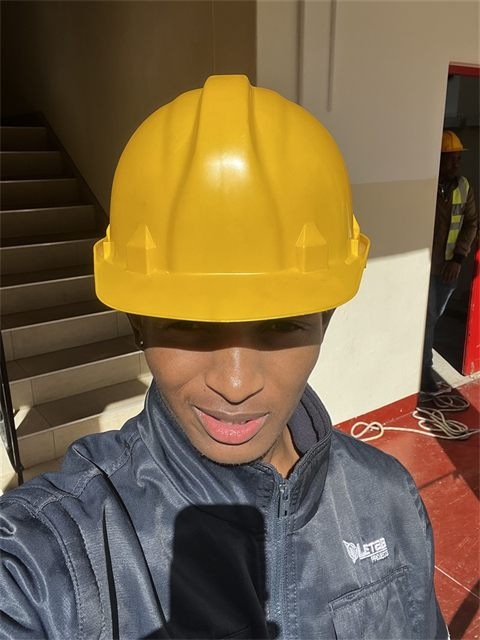
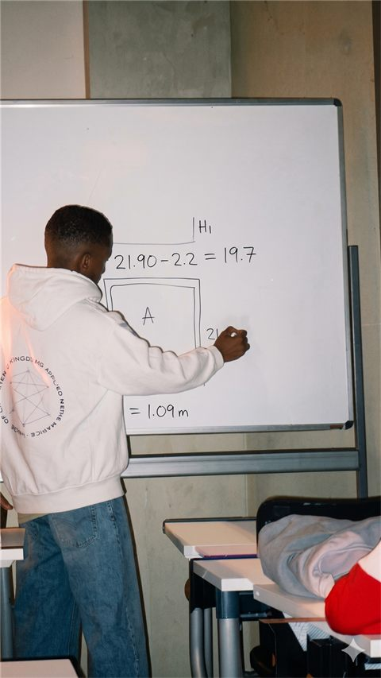

| CV
BSc Construction student at Wits and aspiring data scientist, learning how the built environment, numbers, and real decisions connect.
Open to internships and flexible roles in data analytics, BI, and construction.
Moments



Drag a photo down or press Esc to close
About
Student, learner, and builder.
Summary
I am a BSc Construction student at Wits and an aspiring data scientist. I am still finding my way, but I know the kind of work that keeps pulling me in. I like problems that sit between people, projects, numbers, and decisions. Construction taught me to respect context, cost, time, drawings, measurements, and the pressure of getting things right. Data gave me another way to ask better questions and explain what is really happening.
I have spent time on site, in tutoring spaces, and in student leadership. Those experiences shaped how I work. I try to be calm, useful, and honest about what I know while still being willing to learn quickly. I am interested in roles where I can grow across data analytics, business intelligence, and construction, especially where clear thinking can help teams make better decisions.
Education
- Bachelor of Science (Construction) - Wits University (Expected Graduation 2027)
Timeline
Projects
Selected work.
Certifications
Credentials & learning paths.

I am learning how to bring construction thinking and data together in a practical way.
You can also try StudyPulse, my AI-integrated study timer built to help students study with more direction.
Contact
Let's connect through any of these platforms.